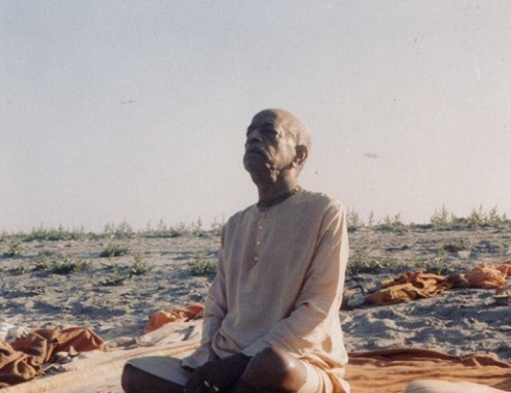

Dont disturb Guru For rubbish things, dont demand!
Posted on : 7th March, 2025

Mauna means "silence." Unless one becomes silent, he cannot think completely about the pastimes and activities of the Lord. It is not that because one is a fool and cannot speak nicely he therefore takes the vow of mauna. Rather, one becomes silent so that people will not disturb him. (SB 3.24.42 purport)
Among all Qualities of pure devotees listed in sastra, one is this Mauna; maunam means silent. A devotee is always silent, he doesn't likes to talk , whenever he talks he will only talk about Sri Krsna. All instructions in sri upadesamrita are instructions for conditioned souls like not doing prajalpa but this is the very nature of pure devotee, so we should follow this in our life and never talk mundane with our senior, junior vaishnavas. That will waste their time and spoil their bhakti. For a pure devotee such disturbances are not good, they dont like it, prabhupad also didnt liked it. As soon as his speaking was done he wanted no one to disturb him. You should listen to him not that he should listen to you. If he does not wants to talk, remain Mauna silent, and let him also remain in his ecstatic silence. Dont disturb Guru For rubbish things, dont demand!
~ HH Bhaktiraghava Swami, instructions.